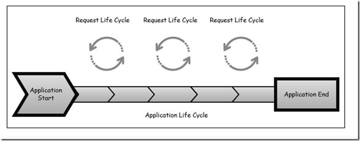

ASP.Net MVC 应用程序的生命周期
一.介绍
定义 ASP.NET 应用程序中的所有应用程序对象共有的方法、属性和事件。此类是用户在 Global.asax 文件中所定义的应用程序的基类。
MVC有两个生命周期，一个为应用生命周期，二为请求生命周期。
二.应用生命周期
应用程序生命周期是指在申请过程实际开始运行IIS，直到它停止的时间。这是通过在应用程序中的启动文件的应用程序开始和结束标记事件。

三.请求生命周期
发生每一HTTP请求是由我们的应用处理的时间的事件序列。
入口点为每个MVC应用始终由ASP.NET收到请求后，计算出应该如何通过URL路由模块来处理。
Routing 路由
ASP.NET MVC生命周期中第一个步骤就是路由，路由的过程是根据请求的Url和注册好的路由规则进行匹配，当一旦找到一个与之匹配找路由规则时，ASP.NET MVC路由引擎就把这个请求交给相应的Handler处理。如果没匹配，则返回404错误。
注册路由，首先从Global.asax上面注册：Controller 控制器
Controller是MVC最核心的组件，他是连接View与Model的桥梁，在Controller内部会有相应的Action方法，可以决定请求返回的视图或数据。Action Excution
一旦Controller被创建并初始化以后，里面的Action就开始上场了。这里ASP.NET MVC的框架的一个核心组件ActionInvoker就决定了请求到底是哪一个Action的方法。Action方法是真正接收请求的处理方法。
Action接收用户的输入，进行相应的逻辑处理并把要返回的数据Model准备好了之后传给相应的视图。View Engine 视图引擎
Action方法的作用是接受输入，然后进行一定的处理并准备响应数据，最后返回一个View Result类型实例。返回的View Result类型这些类型：ViewResult, RedirectToRouteResult, RedirectResult, ContentResult, JsonResult, FileResult, and EmptyResult等等。
当我们在Action方法的最后返回一个View Result的时候，ASP.NET MVC框架首先就会选择相应的视图引擎来返回视图。ASP.NET视图引擎都会实现接口IViewEngine。默认ASP.NET MVC框架为我们提供了接口IViewEngine两个实现，视图引擎WebForm和Razor。
View视图其实就是一个模板的作用，它是把Action传过来的数据绑定到视图文件中并显示到页面中。